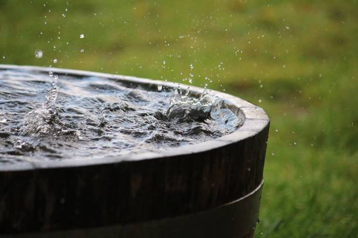
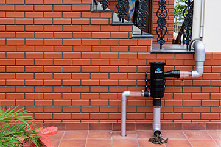
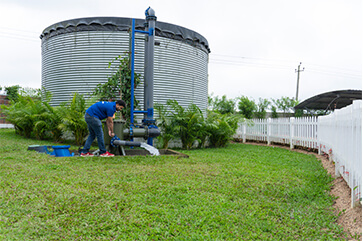

Our Mission
At the Rainwater Harvesting Project, our goal is to help communities around the world utilize rainwater as a sustainable and eco-friendly alternative to traditional water sources. We believe that by harnessing nature’s most abundant resource, we can reduce our environmental footprint and promote water conservation for generations to come.
Project Goals
The primary goals of the Rainwater Harvesting Project are:
- To promote rainwater harvesting systems in urban and rural communities.
- To reduce dependency on traditional water supplies and encourage water conservation.
- To provide a cost-effective solution to water scarcity.
- To help communities save money by reducing water bills.
- To protect the environment by reducing the carbon footprint of water usage.
Our Objectives
We aim to create widespread awareness about the importance of water conservation and rainwater harvesting. By educating communities, we hope to foster sustainable practices that can be implemented worldwide. We also strive to make rainwater harvesting systems accessible to everyone, regardless of location or income level.
Our Process


